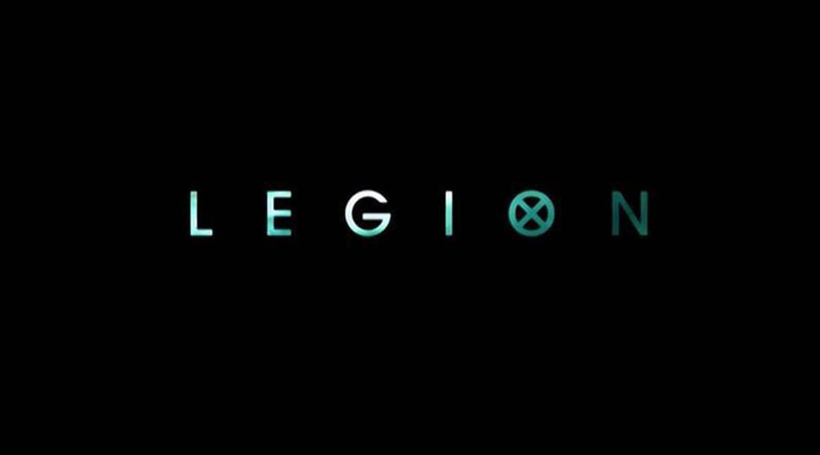

《行尸走肉》第8季加入多位常规角色
2017-04-18 浏览次数 19231
by Gallagher驾到
末世来临时，你愿意和谁生活在一起？是灌下迷魂汤让你不知世间如何的幻想家，还是掌控一切肆意驱使他人的独裁者，亦或是非生即死只剩茹毛饮血的野蛮人？本集行尸告诉了观众他们的选择，早已知晓却永不过时的答案：能够相濡以沫，彼此扶持，各自为了对方奋战不息的家人。
想要高潮酣畅淋漓，充分的铺垫和前戏必不可少，实际上本季大多数时候都在挖坑埋伏笔，而最终集的一小时时间里，也有半小时都花在了大战前的准备上，这十分必要，不光是营造了山雨欲来风满楼的气氛，而且对于本集的主题同样有了高度的展现。
“如果今天有人会死，都是死在自己的选择上。”尤金意有所指的话语，成为了本集萨沙最大的关键词：选择。
躺在棺材里一路向着亚历山大社区进发，萨沙进入了一段独有的回忆（冥想），那是在护送玛姬去救治、碰上尼根前，她与亚伯拉罕的一个小插曲，那时他们俩刚刚开始。
是人都会有私心。长久以来的奔波和失去，萨沙实在太累太累了，好不容易又出现了一个能产生感应的男人，如何不该珍惜？
哪怕是一个可笑的噩梦，也足以成为懦弱和退缩的理由，何况此前他们已经付出无数次了，就这一次不站出来又有何妨呢。
那一瞬间，萨沙是真的害怕再次失去爱人，从泰尔西，到鲍勃，不要再来一次……
可也同样是这一瞬间，她再次决定挺身而出。坦荡的亚伯拉罕早已看穿了她：“接下来你要跟我说的是，你会去，这样我就可以留下，因为我知道，你自己也不想说出‘玛姬应该靠自己’这种话，我知道这句话会回荡在你脑中，很久很久，你会因为仅仅有这念头而做出补偿。”

当年看行尸走肉第一季，被震惊到了，完全是神剧！看到现在，赶紧一起删了，像老太太裹脚布一样，又臭又长！美剧的运作模式，精品最终都会烂尾！
摩根的事告送我们，哪有什么真正的平静，在这个不那么美好的世界里，做一个不好不坏的人就得了，人不犯我我不犯人，别整天把什么善良挂嘴边，没个球用！！！
I am Winner！
-
全境通告
A.P.B.
8.8
-
衰姐们
Girls
8.8
-
《超感猎杀》第二季海报及预告解析
新闻泽生 1月前
-
《四重奏》| 人与人的关系像是一道复杂的几何题
剧评溺水的大象 1天前
-

《入场券》：假如给我三天光明，我会用来抛妻弃子，出
影评泽生 1小时前
@ Obama
摩根的事告送我们，哪有什么真正的平静，在这个不那么美好的世界里，做一个不好不坏的人就得了，人不犯我我不犯人，别整天把什么善良挂嘴边，没个球用！！！